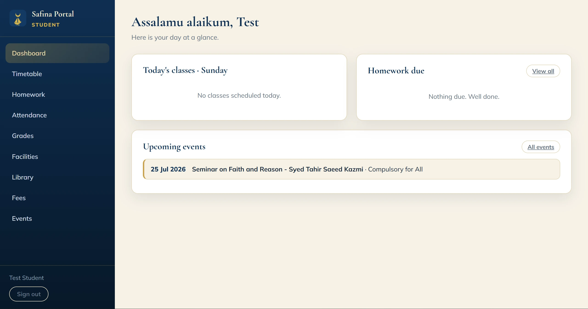
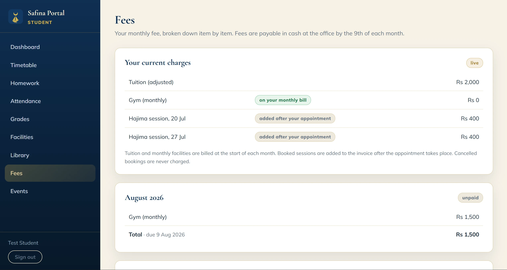
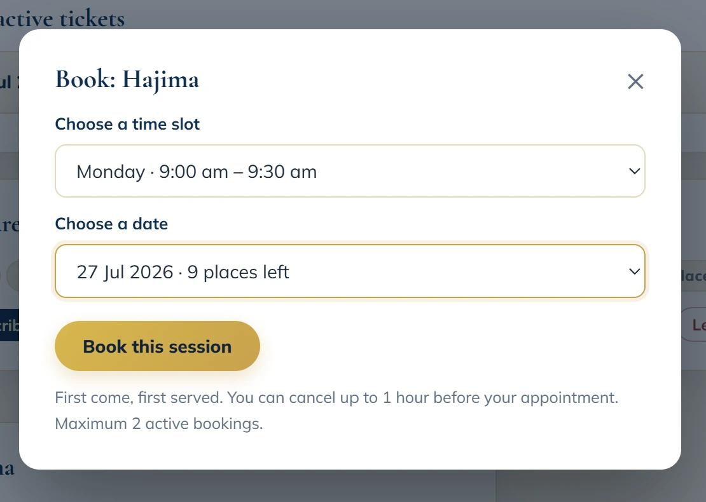
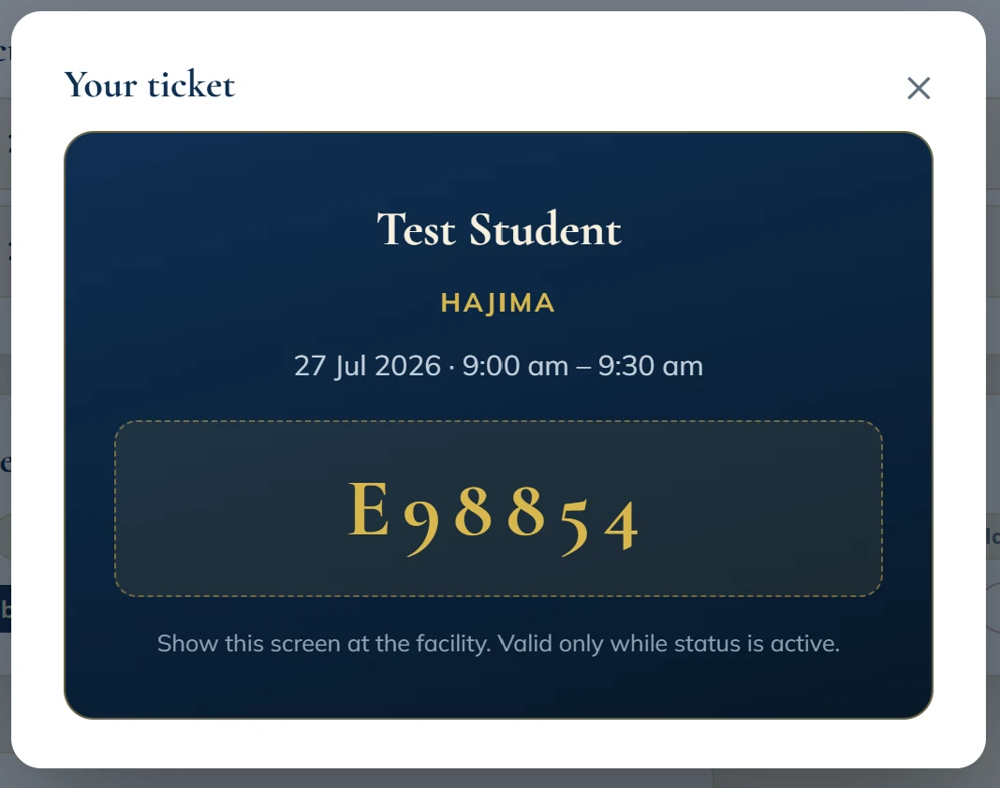

The complete management system of Safina International, an educational institute in Multan: admissions, classes, billing, payroll, library, facilities, and ID cards. I designed, built and shipped it, and I operate it, as its only engineer.
tables under trigger-written audit with before-and-after values. Only the log itself and an internal counter sit outside it
15
ordered SQL migrations from prototype to production
What it does
Students sign in with an emailed code, no passwords anywhere, and see their day at a glance: classes, homework with online submission, an attendance donut, fees set out plainly, and a digital student ID that doubles as a printable card. Teachers post and grade homework and take one-tap attendance. The office runs admissions through a three-step wizard, the accounts desk records cash against auto-generated invoices, and gym and daycare staff see exactly their members and no one else's.

The student dashboard: the day at a glance.

Fees built for one glance: what to pay now, what is coming.

First-come facility booking with capacity locking.

A session ticket, shown at the door.
The parts that were hard
Billing that matches real life. Tuition and subscriptions in advance, sessions in arrears, mid-month joins charged immediately and prorated to the day, one-time trials with month locks, automatic suspension for unpaid fees with a grace mechanism.
Money that cannot be silently edited. Financial records are append-only: corrections happen through recorded reversals and waivers, never deletion, and every change lands in a database-trigger audit log with before-and-after values.
Security with no server of my own. Authorization lives entirely in PostgreSQL row-level security and guarded functions; each of the seven roles reads exactly what it needs. The service-role key is never used.
Built for non-technical users, in two languages. Plain-language interfaces, printable branded PDFs, and parent handouts in English and Urdu.
The stack
Vite, React 18, and TypeScript with a hand-written design system, no UI libraries. Supabase (PostgreSQL) behind row-level security. Email OTP auth over the institute's own domain. Netlify hosting, pg_cron for nightly billing. Everything runs on free tiers by design, because the institute had no software budget.